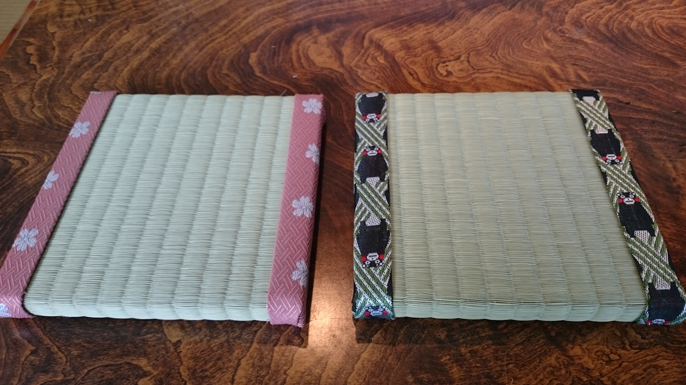

Welcome to Queenie Travel Guide! Looking for a trip to Japan? But don't know where to visit, where to eat? Let's plan your trip with me! In this website, I will share my own experiences about Japan. I will introduce those beautiful places I visited. If you want to have a different experience for Japan culture, you must not miss the "Special Experience"!! Let's explore and start our trip!
What's New
Make your own Tatami mat
Have you try making a tatami mat before? Let's make one in Kumamoto!
‹ Read more... ›